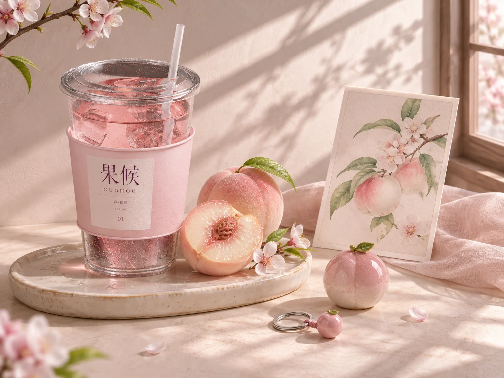
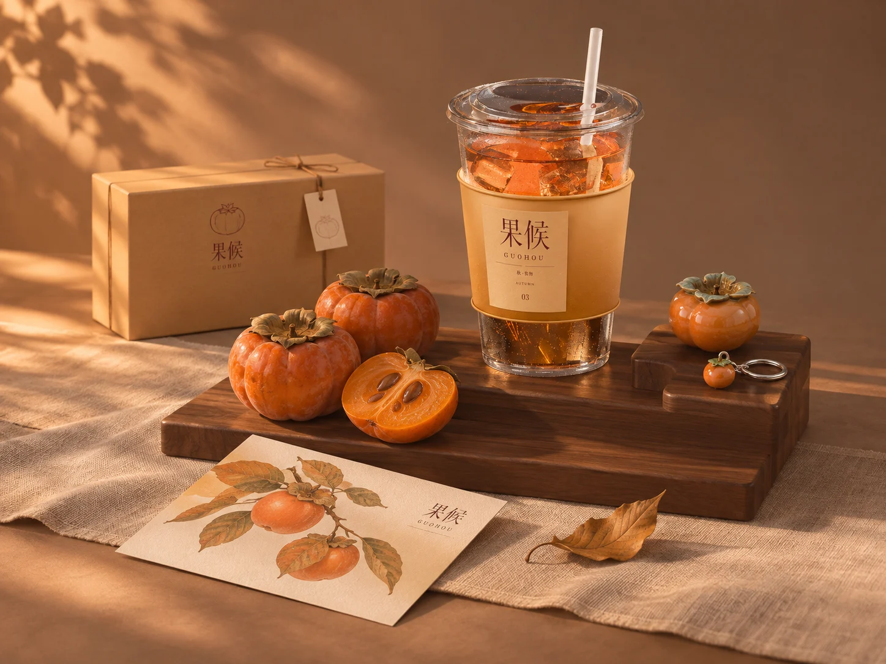
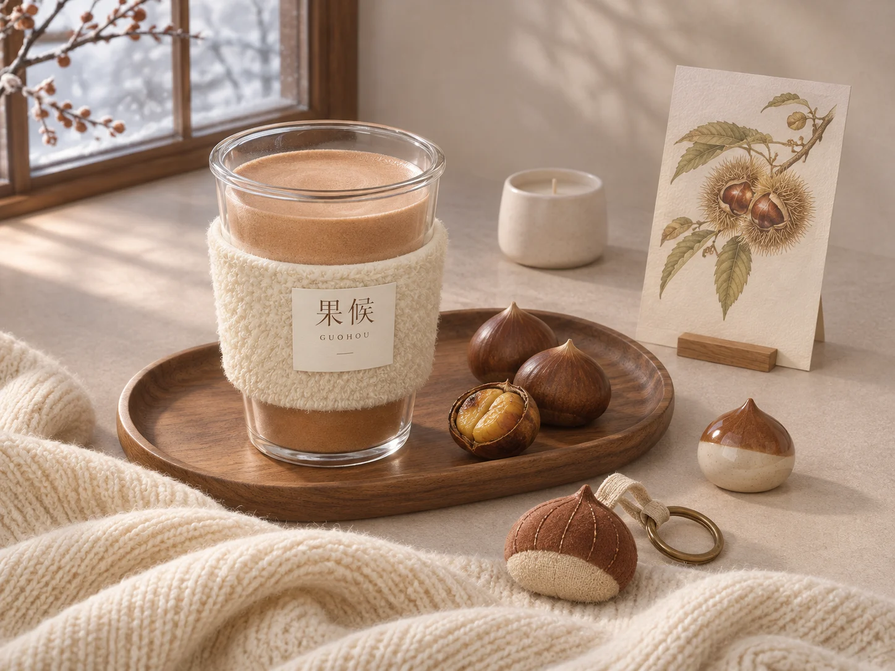
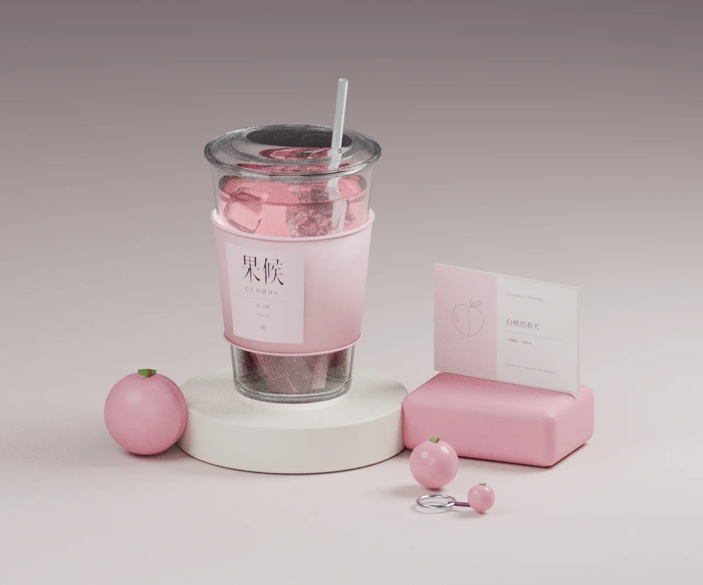
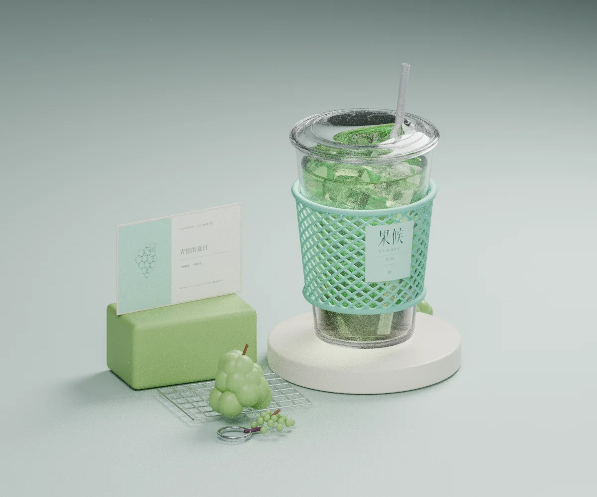
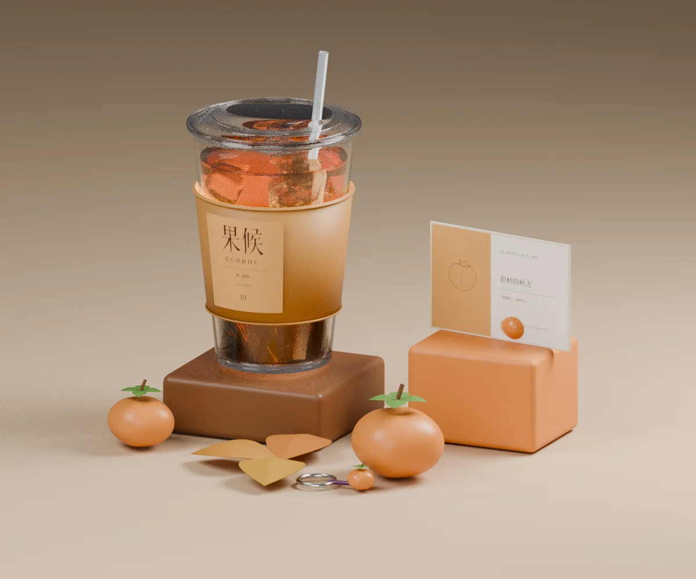
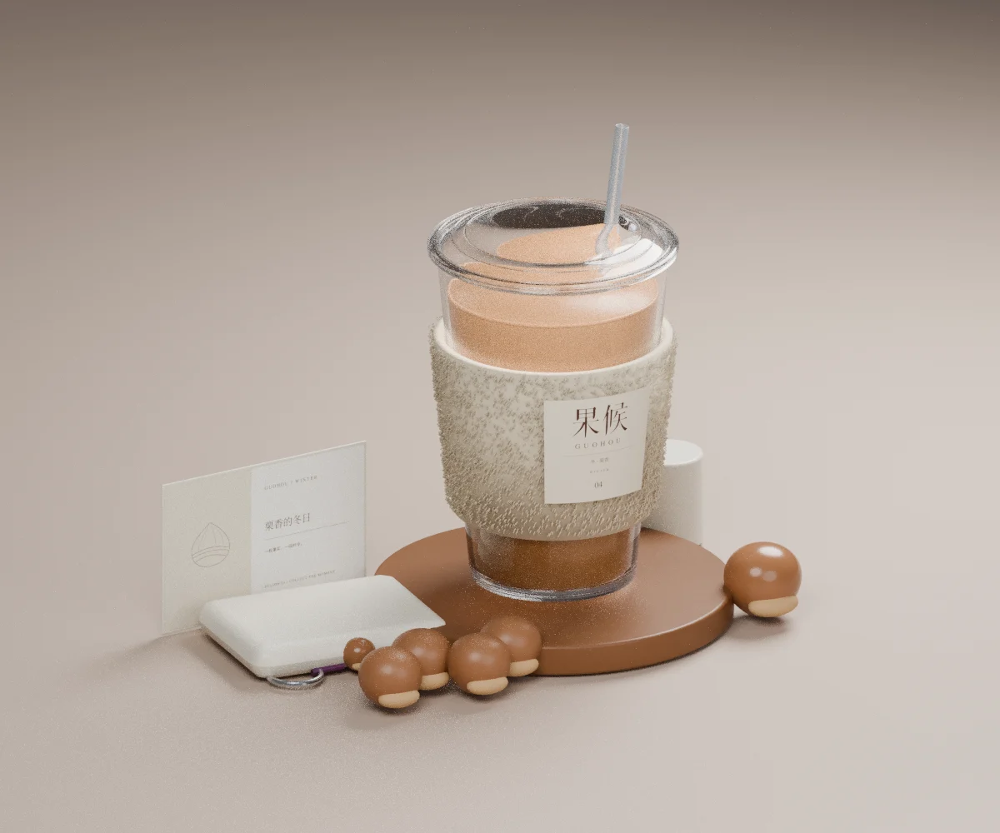

Brand identity / 2026 / VIS
果候
GUOHOU / FOUR SEASONS
让四季，成为四种触感。
以果实、色彩和杯套材质建立季节识别。每一季拥有独立的摆台与配件，而不只是替换同一画面的颜色。



从杯体建模，到材质探索。
以下为 Blender 直接渲染，用于检验杯体、杯套、展示台与周边的空间关系。上方广告场景是基于此方向的生成式延展，两者并非同一种输出。




制作说明 / 本项目为品牌视觉探索与应用提案。AI 生成场景与 Blender 渲染已分别标注；图片中的小字、材料性能及生产工艺尚待打样验证。这里展示的是当前阶段方案，而非商业落地声明。